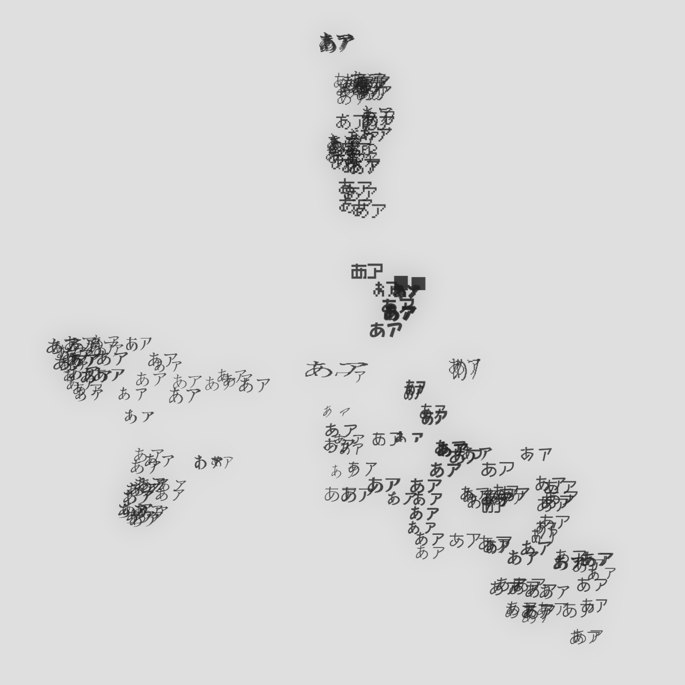
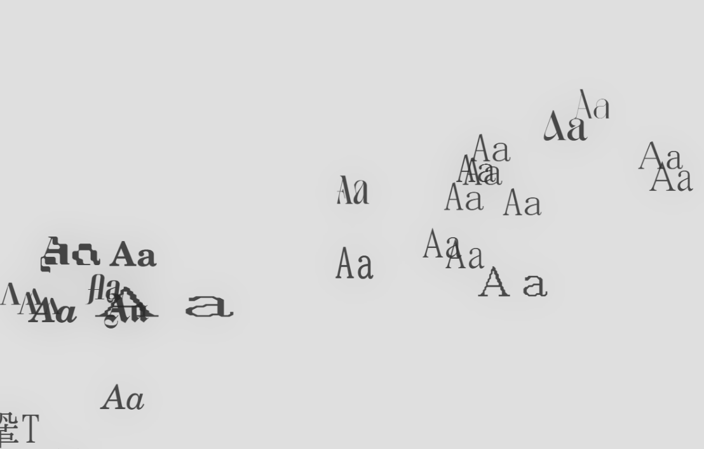
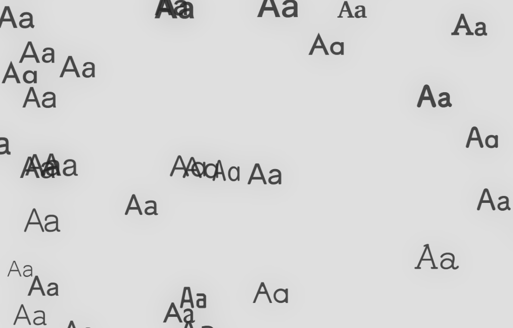

Font Map
hazuqu yimiru

フォントをグリフの類似度に合わせてプロットします。リンク
Font Map
更新ボタンを押すとPCにあるフォントを取得します。クローム系のブラウザじゃないと動かないと思います…。
アルゴリズム
欧文 「AQRwsy」と和文「アあ令笙」をopentype.jsで描画します。フォントが持っている字を測って1字でも持っていれば地図に載ります。cmapによって大文字のみを持っているフォントや第2水準の漢字を持っているフォントなどで大分されます。
以下の9つの方法で特徴を値にします。
| typical（文字らしさ） | 全フォントの平均の形との差 |
| stem | StdHWとStdVWの比（CFF 形式のフォントのみ） |
| weight（太さ） | 線幅の中央値 |
| contrast（明朝らしさ） | 線幅の80%点÷20%点、90%点÷中央値 |
| corner（角） | 角の数、角での曲がり角度の平均、曲がり角度 |
| curve（曲線率） | 輪郭のうち曲線の長さの割合 |
| complexity（複雑さ） | 区間の数とか短い区間の割合 |
| direction（辺の向き） | 8方向の辺の向き |
| proportion（寸法） | 縦横比、ベースラインから上端・下端までの長さ |
そのフォントが持たない値は平均として扱います。
以上の値の重み付けにより、UMAPで2次元面に配置します。
また単純なフォント同士の距離が見えにくくなるので、1フォントをクリックすると見えるようにしています。
きっかけ
ファイルのデータからUMAPで配置する方法を音楽におけるサンプル整理のツールで使っていました（XOライクなブラウザです）が、Taku氏の「Copera」を見て同様の手法が視覚表現においても実用的な範疇で効果があることがわかり、試した次第です。
実際に使うと
今まで「2DMV向けの細い明朝」として漠然と考えていたフォントが近い位置に置かれわかりやすくなった一方

「丸ゴシック」「角ゴシック」の区別のようなタグで簡易に行えていた区別がすこし分かりづらくなりました。
一長一短な感じがありますね。♥
⤴